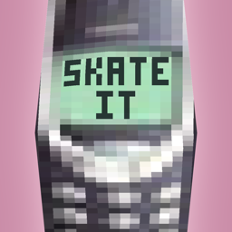

Skate-It!
Your phone is the skateboard
How to play
Hold your iPhone flat with the screen facing up, toss it a little so it spins, and catch it. The game recognizes the trick you landed. A trick counts when the phone is caught screen-up again.
Practice over a bed or a sofa, with small, low tosses.
Common questions
My trick wasn't counted. The phone has to spin faster than a hand turns it and be caught with the screen facing up. Slowly turning it in your hand doesn't count.
Does the game need an account or internet? No. Everything stays on your phone.
Contact
Found a bug or have a question? Open an issue on GitHub and we'll get back to you.